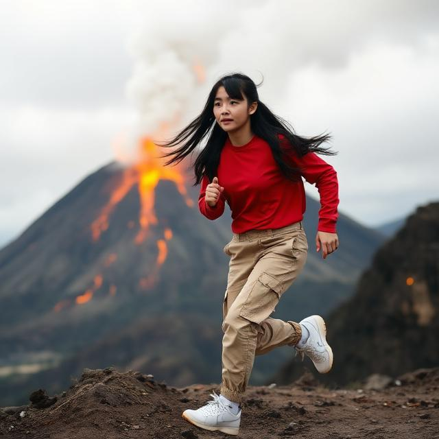
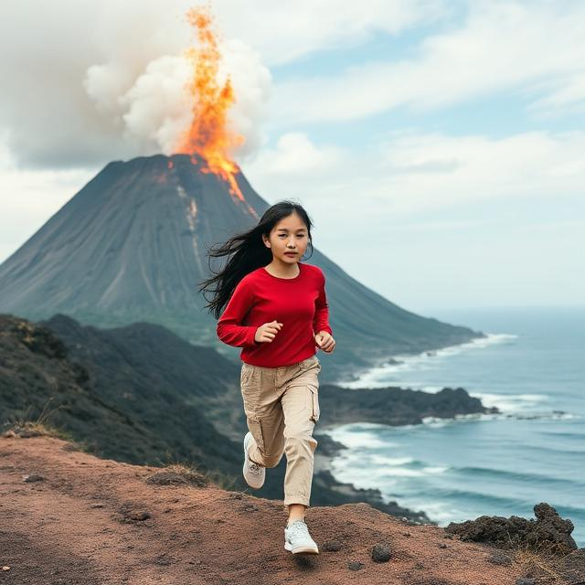

Patricia stood at the edge of the volcanic ridge, the warm
ash-scented wind tugging at her dark hair as the sky glowed
a deep, molten red behind her. Being Japanese, she’d grown
up hearing stories about mountains with spirits and oceans
with memories, and now she felt caught between both. To her
left, the ocean shimmered like a sheet of silver calling her
toward calm, open possibility. To her right, the rough, winding
road carved through black rock and rising steam, promising
challenge, change, and maybe danger. With the volcano rumbling
beneath her feet, Patricia knew she had to choose follow the
soothing pull of the sea or brave the uncertain path of the
road each direction tugging at a different part of who she
hoped to become.
 |
 |
| Run to road | Run to ocean |